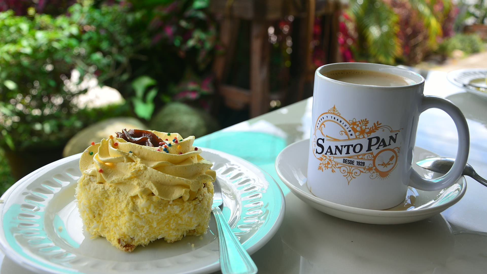
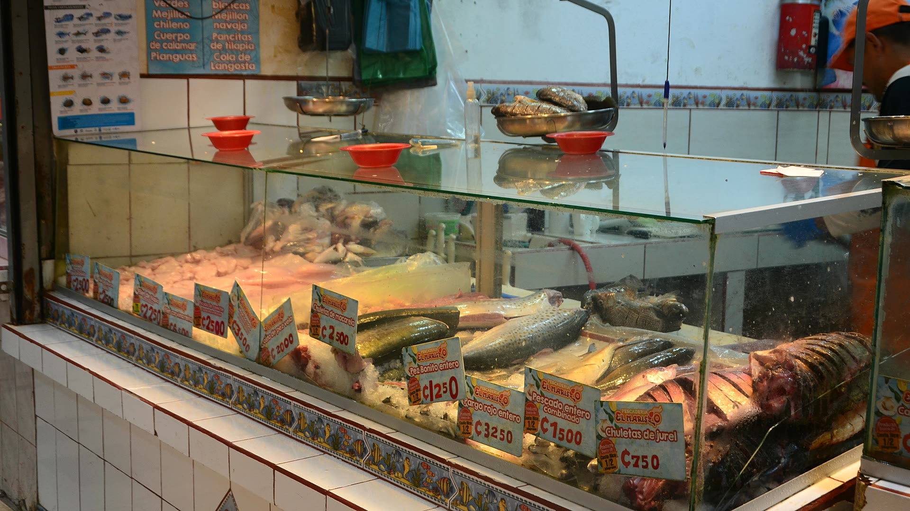
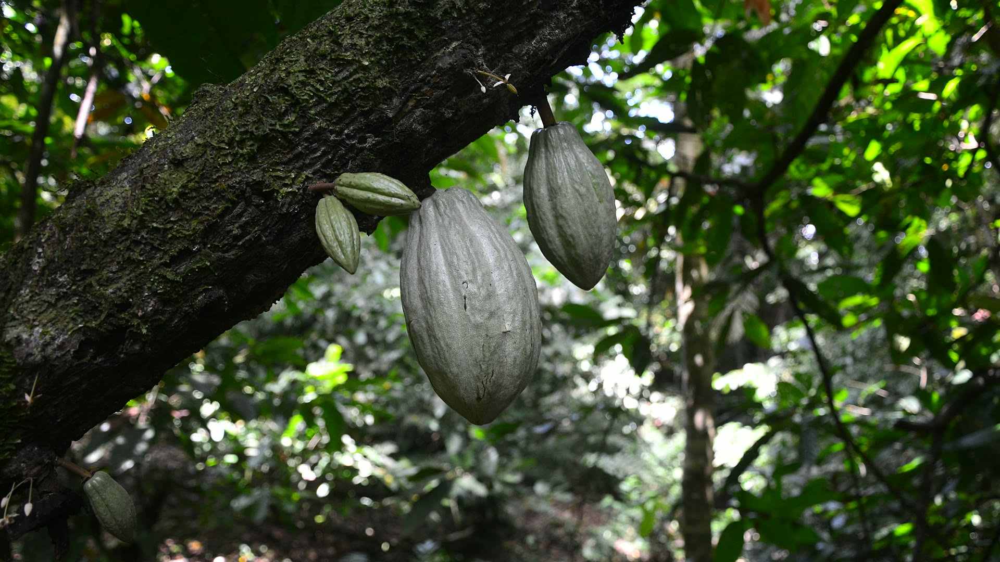

Costa Rica
Vida y viajes en Costa Rica
Vida y viajes en Costa Rica

10. 6. 2025
Dónde bañarse y por qué. Guía completa de la costa de Costa Rica con recomendaciones de las playas más bonitas.
27. 5. 2025
Selva, volcanes y cascadas: guía de los parques más bonitos, con entradas, horarios y consejos prácticos.

26. 5. 2025
Uno de los principales sitios de anidación de tortugas marinas del mundo. Cómo es la visita?

21. 5. 2025
Todo lo que necesitas saber antes de viajar: visado, moneda, transporte y salud.

23. 5. 2024
Dónde y qué comer en Costa Rica. Sodas y gallo pinto en una guía clara de comida local.

14. 9. 2023
Cómo llegué a Costa Rica y por qué me quedé. Historia personal de Martin Burda.

26. 3. 2023
Costa Rica, exportador mundial de café y banano: ¿qué hay detrás de esta historia?
Escríbenos y preparamos tu viaje exactamente a tu medida. Consulta inicial sin compromiso.
Contacto recomendado
La forma más rápida es escribir por WhatsApp o llamar. El correo es ideal para consultas más detalladas.
El formulario está en la página Contacto.